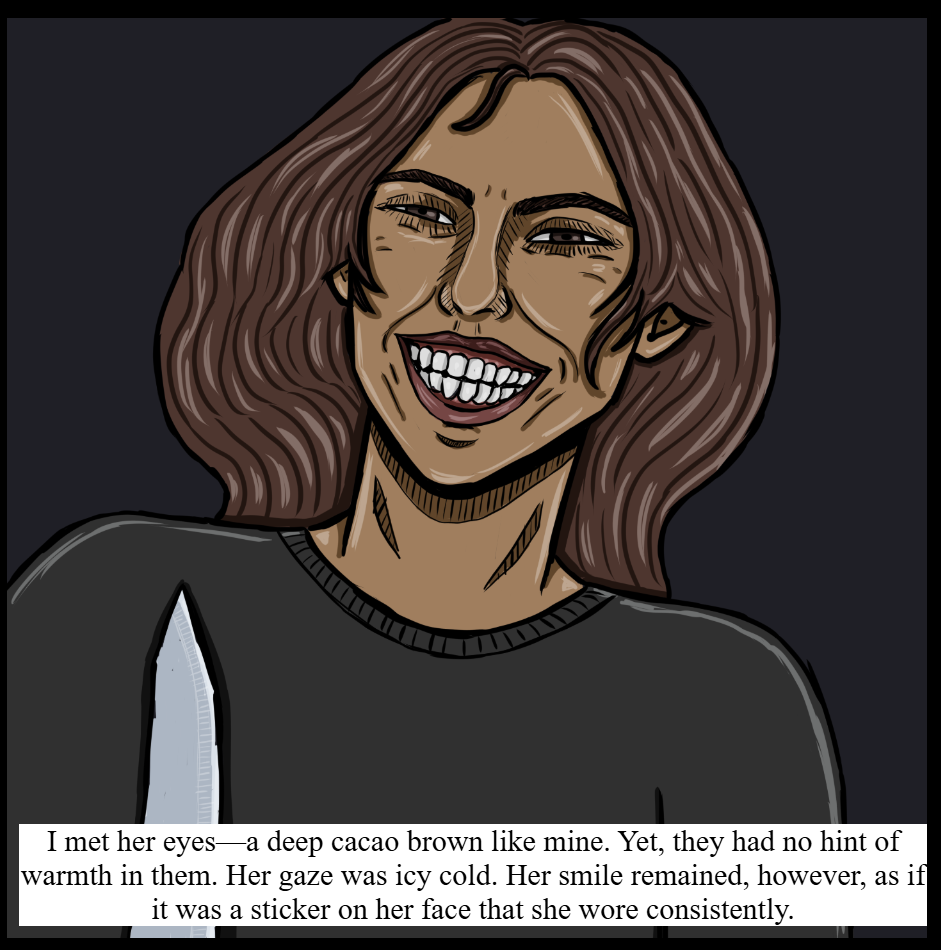
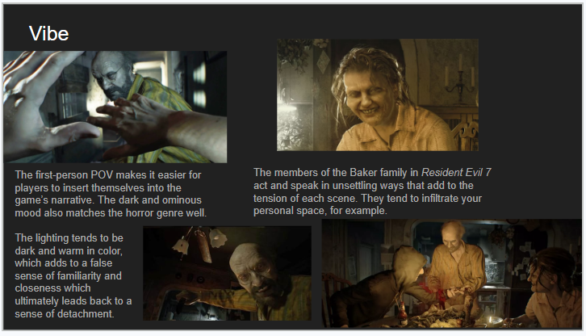
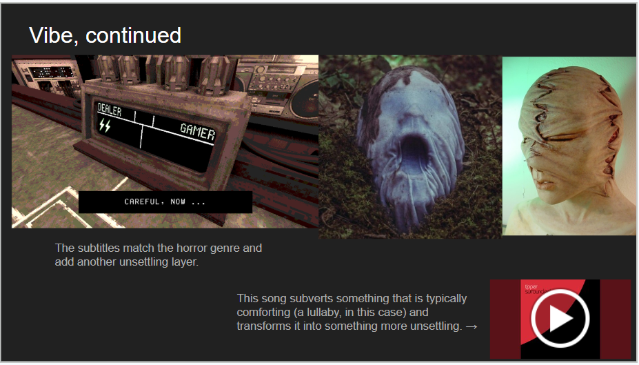
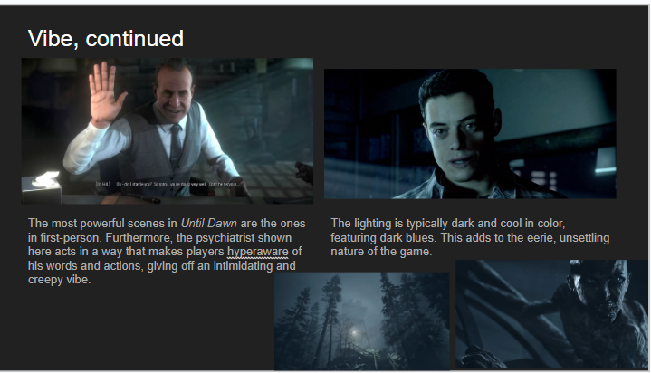
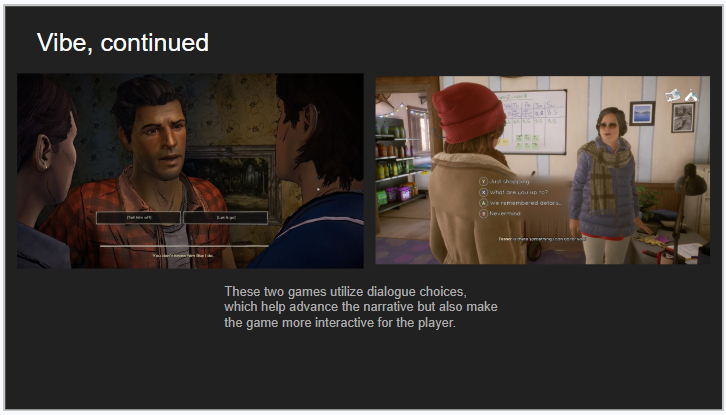
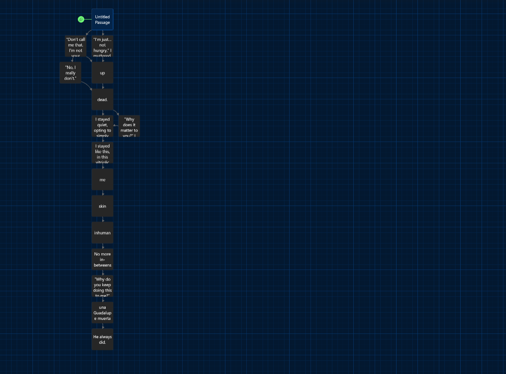
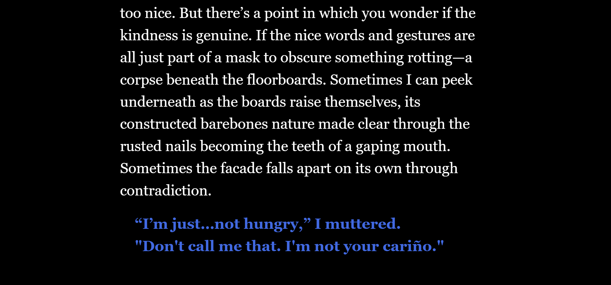
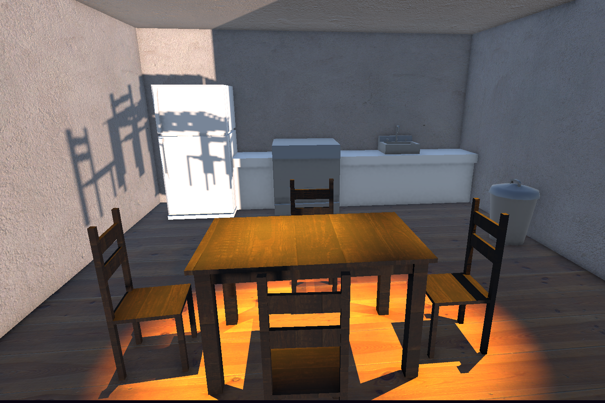
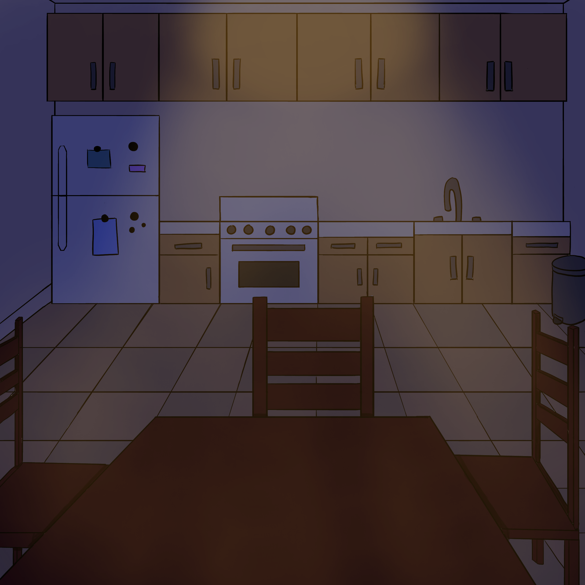

unfurled
the fiber zipper drops, leaving my flesh cut open and bare for the morning birds to eat.
|
Dulces Sueños: The Game

One of the frames from the game.
My game is a piece of interactive fiction based on a short story I wrote titled “Dulces Sueños.” The story metaphorically explores the point of view of young trans men of color who face subtle rejection from family members and are forced to accept a gender role that doesn’t align with their identities. The story emphasizes how this can feel suffocating, violent, and even confusing. Despite their families still caring for them, the love feels disingenuous and as if it is meant for someone who doesn’t really exist. The game introduces some choices that ultimately don’t affect the course of the story much but serve to amplify the feeling of helplessness.
You can play the game here.
I started off with a short horror story that I wrote for the class GNSE 15002: Gender and Sexuality in World Civilizations I. It was a story that combined elements of prose, poetry, and illustrations. I knew that I wanted to adapt it into a game for my Media Arts and Design capstone project, so I started generating ideas from there. At the beginning of my creative process, I was looking to make a 3D game inspired by games like Resident Evil 7: Biohazard and Until Dawn. Here are some slides from my creative brief that indicate the direction that I was initially leaning towards.




I went on to create a prototype in Twine to map out the choices and subsequent branches of the narrative. I tested it out with two young trans men who matched most of what I was looking for in a target audience. Below are images of what the prototype looked like on Twine.


After pitching my idea to a panel, I realized that another option I had was to make a more 2D game. People on the panel were more intrigued by my 2D art style and thought the story would lose some of its charm if I made it into a 3D game. So, I made a 3D scene in Unity representing the kitchen where much of the story takes place and then drew this same scene digitally. Then, I showed these scenes one after the other to one of the trans men and to my capstone advisor. The feedback I received seemed to indicate that the 2D scene matched more of my story's intended vibe. That was when I decided to pivot to a web-based piece of interactive fiction with 2D drawings. Below are the 3D and 2D versions of the same scene side by side.


I spent the rest of my time drawing and coding in HTML, CSS, and JavaScript. I received some help with technical issues from my capstone advisor. Below is a video of me playing through the game.